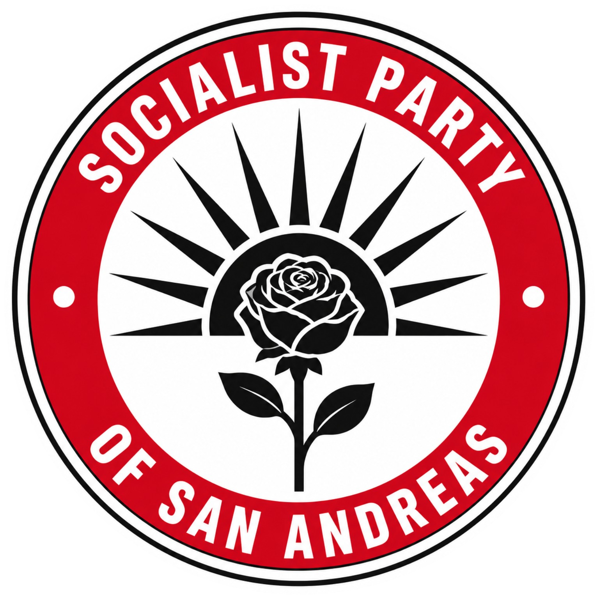
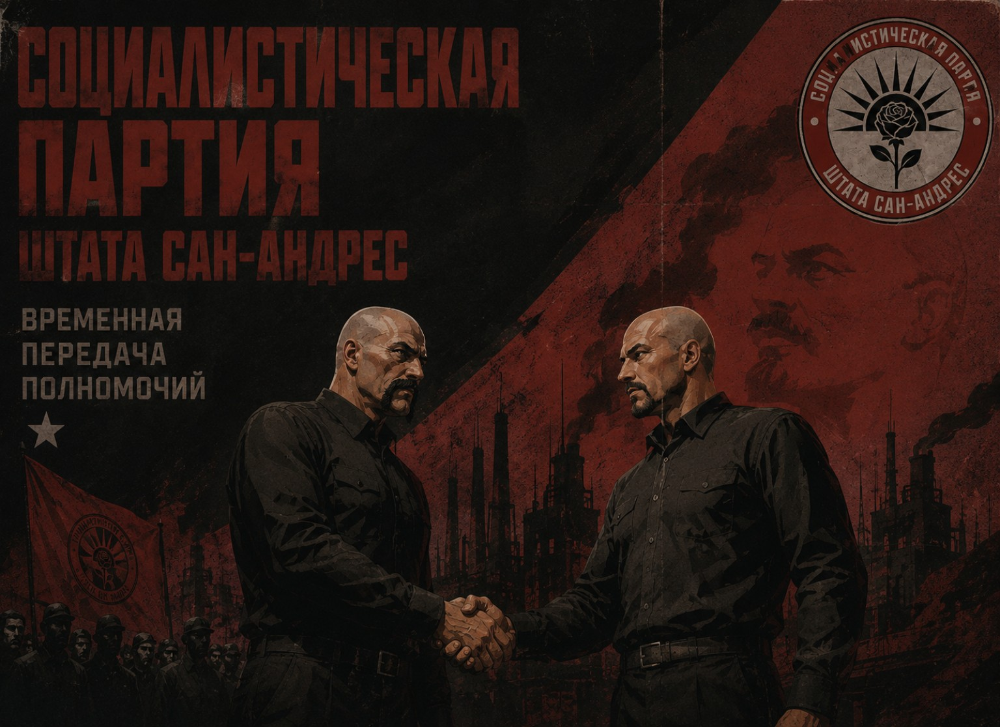
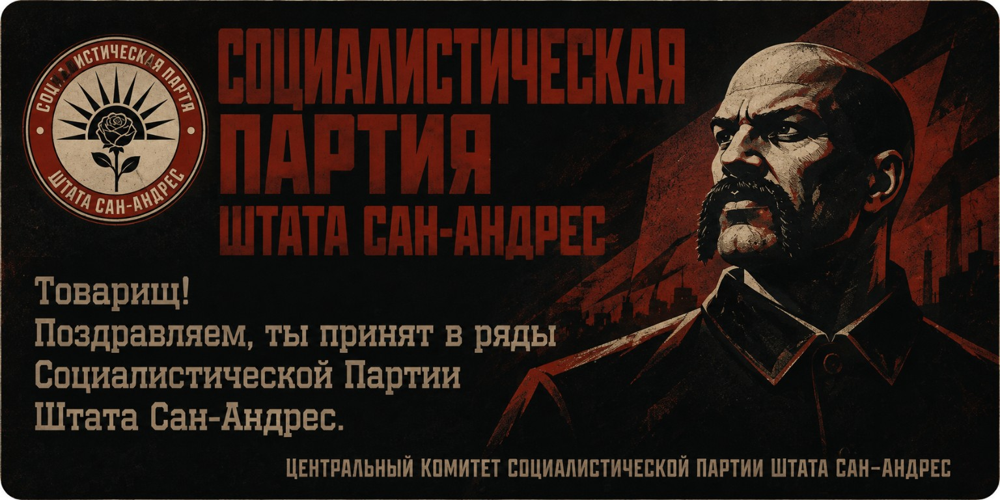
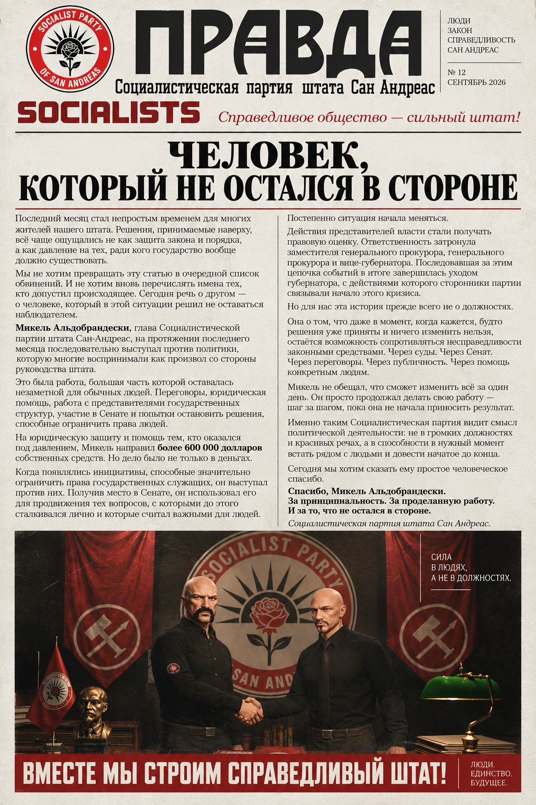
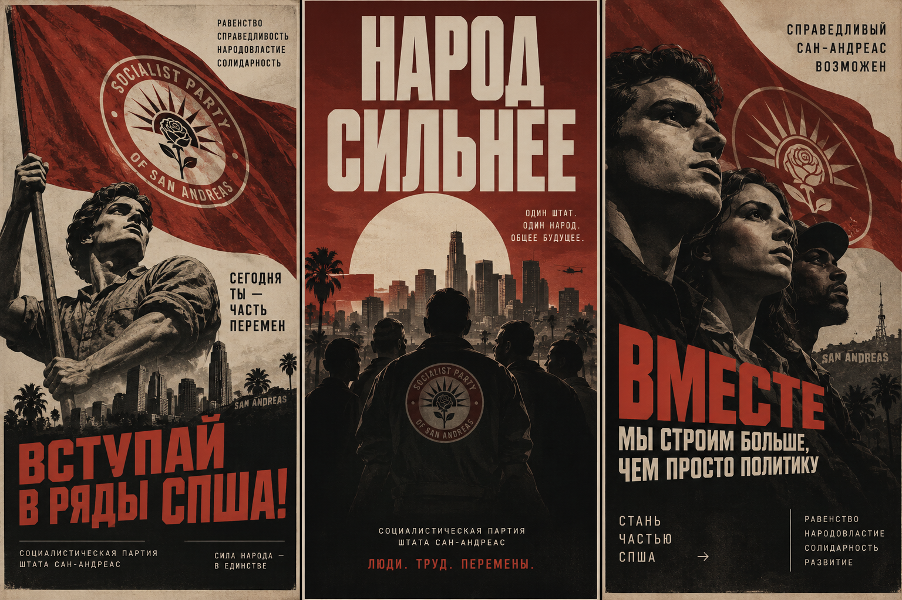
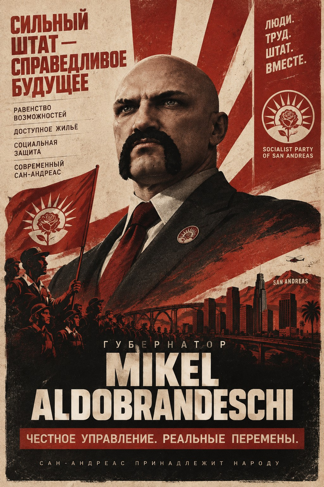

Социальная политика
Доступное жильё, достойная оплата труда, помощь семьям и социальная защита.

СОЦИАЛИСТИЧЕСКАЯ ПАРТИЯ ШТАТА САН-АНДРЕАС
Равенство · Справедливость · Народовластие · Солидарность
Мы строим штат, где экономический рост служит всем жителям, а государство отвечает перед человеком.
СПША основывает деятельность на социальной справедливости, равенстве возможностей, солидарности и участии граждан в управлении.
«Государство существует для народа, а не народ для государства.»
Доступное жильё, достойная оплата труда, помощь семьям и социальная защита.
Поддержка малого бизнеса, прозрачный бюджет и борьба с коррупцией.
Доступная медицина, модернизация больниц и достойные условия для медиков.
Подотчётные органы, независимый суд и ответственность за коррупцию.
Современный транспорт, дороги, зелёные зоны и чистые технологии.
Общественные слушания, опросы и открытое обсуждение законопроектов.
ID 116881 · m3lsanta@sa.com
ID 118231 · skezziwe@sa.com
ID 124817 · karakurt@sa.com

Новости, заявления и материалы о деятельности СПША.

События, встречи и новые материалы.

Новый выпуск партийной газеты «Правда».


Заявление подаётся в официальной теме партии на форуме Majestic RP.
ПОДАТЬ ЗАЯВЛЕНИЕ ↗